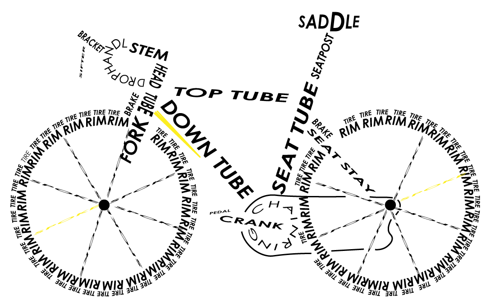
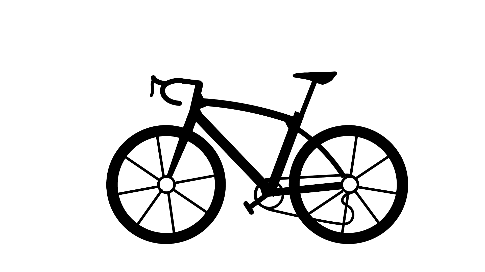
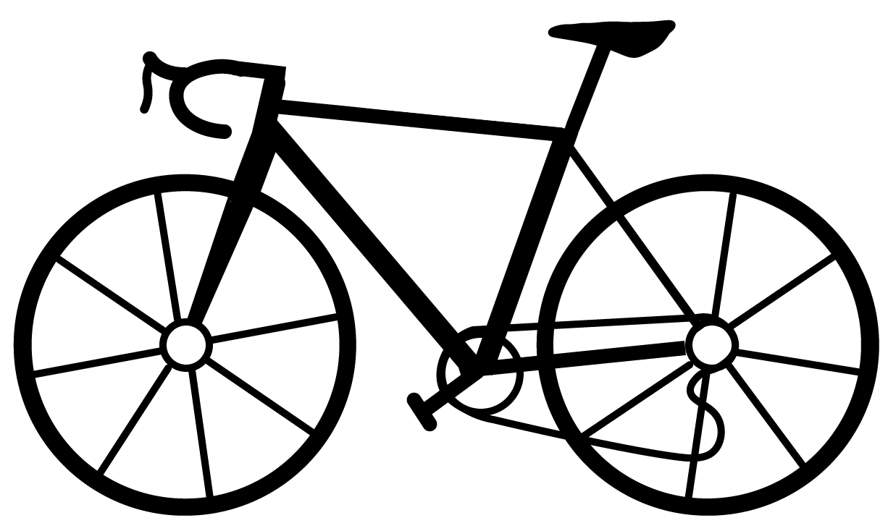

TryCycling
roadbikeを始めたい
そこのあなたへ

自転車にはどのような種類があるのだろうか？
舗装路を速く、長距離、長時間走ることに向いているスポーツ車。
速く走るためにドロップハンドルと舗装タイヤを装備、車体は軽量で前傾姿勢をとりやすいような設計になっている。レースに参加する。ツーリングをするなどの楽しみ方がある。
未舗装路を走るためのスポーツ車。 悪路でも安定した走行をするために太いブロックタイヤとサスペンションを装備、頑丈な設計になっている。 スポーツ目的以外にも、乗り心地のよさから街乗りでも人気がある。
幅広い用途に対応でき手軽に始められるスポーツ車。 クッション性を意識したタイヤと適度に前傾姿勢をとれる設計で街中を快適に走りたい場合に便利。 通勤、通学。街乗り。軽めのエクササイズなどに主に使用される。
roadbikeにはどのような種類があるのだろうか？
オールマイティーな性能をもったロードバイク。 平地も走れ、山も登ることができる。 尖った性能はないがすべてをそつなくこなすことができる万能型。
軽さを重視したロードバイク。 軽いため山を速く登ることができる。 しかしその軽さゆえに大きなパワーは出しづらく平地を速く走るのは苦手。
空力性能を重視したロードバイク。 空気抵抗が少なくなるように設計されているため、平地をより速く走ることができる。 重量が重くなってしまうため山を登るのは苦手だが、山下りや平地では真価を発揮する。
長距離を快適に走ることを重視したロードバイク。 前傾姿勢が浅くなるように、路面からの振動を軽減するように設計されているため体への負担を軽減することができる。 スピードを出すことは苦手だが、ロングライドに向いている。
未舗装路も走れるロードバイク。 太いタイヤを装着することができるので未舗装路での走行が可能。 マウンテンバイクとロードバイクの中間のような使い方ができる。
価格に大きくかかわってくる素材について知ろう
乗り心地
軽さ
価格
鉄なので重くさびやすいが乗り心地が良い 価格の幅は大きい お洒落な街乗りにおすすめ
乗り心地
軽さ
価格
安く丈夫な素材 エントリーモデルによく使われる これから始めたい人におすすめ
乗り心地
軽さ
価格
軽く乗り心地もよい素材 性能が良いぶん高価 性能が良いバイクが欲しい人におすすめ
まだわからない人はここで自分に合う自転車を診断しよう
Aを選んだあなたには
ママチャリ
Bを選んだあなたには
グラベルロード
Cを選んだあなたには
マウンテンバイク
Dを選んだあなたには
クロスバイク
Eを選んだあなたには
エンデュランスロード
Fを選んだあなたには
エアロロード
Gを選んだあなたには
オールラウンドロード
Hを選んだあなたには
クライミングロード
Iを選んだあなたには
オールラウンドロード